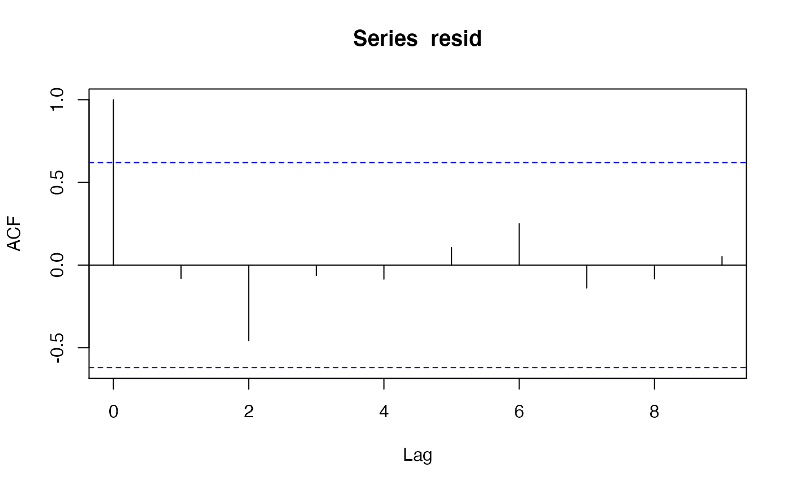

VPA関数を使った資源量推定
市野川桃子
2021-06-29
vpa.Rmdこちら http://cse.fra.affrc.go.jp/ichimomo/fish/rvpa.html のサイトからの転載になります． データも，このサイトから持ってきています．
VPAの実施
データの読み込み
library(frasyr)
#> Warning: replacing previous import 'magrittr::set_names' by 'purrr::set_names'
#> when loading 'frasyr'
#> Warning: replacing previous import 'EnvStats::qpareto' by 'rmutil::qpareto' when
#> loading 'frasyr'
#> Warning: replacing previous import 'EnvStats::ppareto' by 'rmutil::ppareto' when
#> loading 'frasyr'
#> Warning: replacing previous import 'EnvStats::rpareto' by 'rmutil::rpareto' when
#> loading 'frasyr'
#> Warning: replacing previous import 'EnvStats::dpareto' by 'rmutil::dpareto' when
#> loading 'frasyr'
#> Warning: replacing previous import 'assertthat::has_name' by 'tibble::has_name'
#> when loading 'frasyr'
#> Warning: replacing previous import 'rmutil::nesting' by 'tidyr::nesting' when
#> loading 'frasyr'
#> Warning: replacing previous import 'magrittr::extract' by 'tidyr::extract' when
#> loading 'frasyr'
caa <- read.csv("https://raw.githubusercontent.com/ichimomo/frasyr/dev/data-raw/ex2_caa.csv", row.names=1)
waa <- read.csv("https://raw.githubusercontent.com/ichimomo/frasyr/dev/data-raw/ex2_waa.csv", row.names=1)
maa <- read.csv("https://raw.githubusercontent.com/ichimomo/frasyr/dev/data-raw/ex2_maa.csv", row.names=1)
dat <- data.handler(caa=caa, waa=waa, maa=maa, M=0.5)
# VPAによる資源量推定
res_vpa <- vpa(dat,fc.year=2015:2017,tf.year = 2015:2016,
term.F="max",stat.tf="mean",Pope=TRUE,tune=FALSE,p.init=0.5)
res_vpa$Fc.at.age # 将来予測やMSY計算で使うcurrent F (fc.yearのオプションでいつのFの平均かが指定される)
#> 0 1 2 3
#> 0.4901521 1.1503151 1.3131002 1.3131001
plot(res_vpa$Fc.at.age,type="b",xlab="Age",ylab="F",ylim=c(0,max(res_vpa$Fc.at.age)))
VPA結果を外部から読み込む場合
- read.vpa関数を使って読み込めます
- out.vpa関数による出力と同じ書式になりますので、out.vpa関数でひな形ファイルを作成してから、エクセルでそれを編集し、read.vpa関数で読むと良いと思います
#out.vpa(res_vpa) # vpa.csvというファイルが作成されます。VPAの結果のグラフ出力となるvpa.pdfも出力されます。
res_vpa2 <- read.vpa("https://raw.githubusercontent.com/ichimomo/frasyr/dev/data-raw/ex2_vpa.csv") # vpa.csvを編集後、read.vpa関数で読み込みます
#> Pope is TRUE... OK? (mean difference= 0 )
#> Plus group is TRUE... OK?さまざまなVPAのデモ
データの読み込みと整形
# 読み込み
caa <- read.csv("https://raw.githubusercontent.com/ichimomo/frasyr/dev/data-raw/ex1_caa.csv", row.names=1)
waa <- read.csv("https://raw.githubusercontent.com/ichimomo/frasyr/dev/data-raw/ex1_waa.csv", row.names=1)
maa <- read.csv("https://raw.githubusercontent.com/ichimomo/frasyr/dev/data-raw/ex1_maa.csv", row.names=1)
M <- read.csv("https://raw.githubusercontent.com/ichimomo/frasyr/dev/data-raw/ex1_M.csv", row.names=1)
index <- read.csv("https://raw.githubusercontent.com/ichimomo/frasyr/dev/data-raw/ex1_index.csv", row.names=1)
# 整形
dat <- data.handler(caa=caa, waa=waa, maa=maa, index=index, M=0.4)チューニングなしVPAのバリエーション
# p.initは初期値。収束しない場合（Fがゼロになる場合など）は、初期値を変えてみる
# fc.yearは、Fcurrentを計算する範囲。管理基準値と将来予測で使われる。
vout1 <- vpa(dat,tf.year=1997:1999,Pope=TRUE,fc.year=1998:2000,alpha=1,p.init=0.5)
vout1a <- vpa(dat,tf.year=1997:1999,Pope=FALSE,fc.year=1998:2000,alpha=1,p.init=0.5)
vout1b <- vpa(dat,tf.year=1997:1999,Pope=TRUE,fc.year=1998:2000,alpha=0.5,p.init=0.5)
#> [1] "Warning! The estimated F for the older ages may not be accurate if C<<N is not satisfied for the older ages."
vout1c <- vpa(dat,tf.year=1999:1999,Pope=TRUE,fc.year=1998:2000,alpha=1,p.init=0.5) チューニングVPAのバリエーション
## vout2; チューニング，選択率updateなし
vout2 <- vpa(dat,tune=TRUE,sel.update=FALSE,Pope=FALSE,
tf.year=NULL,sel.f=vout1$saa$"2000", # 選択率の仮定
abund=c("N"),min.age=c(0),max.age=c(6), # 資源量指数の設定
alpha=1,p.init=0.5,max.dd = 0.00001,fc.year=1998:2000)
## vout3; チューニング，選択率update
# tf.yearは選択率の初期値として用いられる。
vout3 <- vpa(dat,tune=TRUE,sel.update=TRUE,Pope=FALSE,
tf.year=1997:1999,sel.f=NULL,
abund=c("N"),min.age=c(0),max.age=c(7), # 資源量指数の設定
alpha=1,p.init=0.5,max.dd = 0.00001,fc.year=1998:2000)
## チューニング，選択率全推定
# tf.yearも sel.fも必要ない
vout4 <- vpa(dat,tune=TRUE,sel.update=FALSE,term.F="all",
tf.year=NULL,sel.f=NULL,
abund=c("N"),min.age=c(0),max.age=c(6), # 資源量指数の設定
alpha=1,p.init=0.5,max.dd = 0.00001,fc.year=1998:2000)モデル診断・推定パラメータの不確実性の評価
尤度プロファイル
ci0 <- profile_likelihood.vpa(vout3, method="ci",Alpha=0.80)$ciブートストラップ
## ノンパラメトリックブートストラップ(method="n")
set.seed(1)
boot.sim1 <- boo.vpa(vout3,B=10,method="n")
#> [1] 1
#> [1] 2
#> [1] 3
#> [1] 4
#> [1] 5
#> [1] 6
#> [1] 7
#> [1] 8
#> [1] 9
#> [1] 10
# boo.vpaはブートストラップ回数分のvpa関数の返り値のリストを返す
# 値の取り出しは、リストの操作関数sapplyまたはlapplyを用いる
# Bで繰り返し回数を指定します．ここでは10回ですが実際には1000回(B=1000)以上やってください
tf.dist1 <- sapply(boot.sim1,function(x) x$faa["2000"][7,])
ci1 <- quantile(tf.dist1,probs=c(0.1,0.9))
## パラメトリックブートストラップ(method="p")
set.seed(1)
boot.sim2 <- boo.vpa(vout3,B=10,method="p") # 実際には1000回以上(B=1000)やってください
#> [1] 1
#> [1] 2
#> [1] 3
#> [1] 4
#> [1] 5
#> [1] 6
#> [1] 7
#> [1] 8
#> [1] 9
#> [1] 10
tf.dist2 <- sapply(boot.sim2,function(x) x$faa["2000"][6,])
ci2 <- quantile(tf.dist2,probs=c(0.1,0.9))
## 平滑化ブートストラップ(method="r")
set.seed(1)
boot.sim3 <- boo.vpa(vout3,B=10,method="r") # 実際には1000回以上(B=1000)やってください
#> [1] 1
#> [1] 2
#> [1] 3
#> [1] 4
#> [1] 5
#> [1] 6
#> [1] 7
#> [1] 8
#> [1] 9
#> [1] 10
tf.dist3 <- sapply(boot.sim3,function(x) x$faa["2000"][6,])
ci3 <- quantile(tf.dist3,probs=c(0.1,0.9))
## 4つの信頼区間の比較
rbind(ci0,ci1,ci2,ci3)
#> 10% 90%
#> ci0 0.2317481 0.3879756
#> ci1 0.2445851 0.3954071
#> ci2 0.2406343 0.3193398
#> ci3 0.2027727 0.3153419
## ノンパラメトリックブートストラップ for vout4
set.seed(1)
boot.sim4 <- boo.vpa(vout4,B=10,method="n") # 実際には1000回以上(B=1000)やってください
#> [1] 1
#> [1] 2
#> [1] 3
#> [1] 4
#> [1] 5
#> [1] 6
#> [1] 7
#> [1] 8
#> [1] 9
#> [1] 10
tf.dist4 <- sapply(boot.sim4[boot.sim4!="try-error"],function(x) x$faa["2000"][7,])
ci4 <- quantile(tf.dist4,probs=c(0.1,0.9))
## 親魚量の信頼区間のプロット
Years <- colnames(dat$caa)
ssb.boot <- sapply(boot.sim1,function(x) colSums(x$ssb))
x <- t(apply(ssb.boot,1,quantile,probs=c(0.1,0.5,0.9)))
matplot(Years,x,ylim=c(0,max(x)),col=1,type=c("l","b","l"),
pch=1,lty=c(2,1,2),ylab="Spawning biomass")残差の自己相関のチェック
resid <- as.numeric(log(vout3$pred.index) - log(dat$index))
plot(resid,type="b")
acf(resid) # 自己相関は特にない
# 正規性の検定
ks.test(resid,"pnorm",mean=mean(resid),sd=sd(resid))
#>
#> One-sample Kolmogorov-Smirnov test
#>
#> data: resid
#> D = 0.13904, p-value = 0.9759
#> alternative hypothesis: two-sided
# 分布が有意に正規分布から外れているわけではない
ks.test(c(resid,10),"pnorm",mean=mean(c(resid,10)),sd=sd(c(resid,10)))
#>
#> One-sample Kolmogorov-Smirnov test
#>
#> data: c(resid, 10)
#> D = 0.48991, p-value = 0.005872
#> alternative hypothesis: two-sided
# 大きな外れ値があると、p値が小さくなって、正規分布でない、となる。